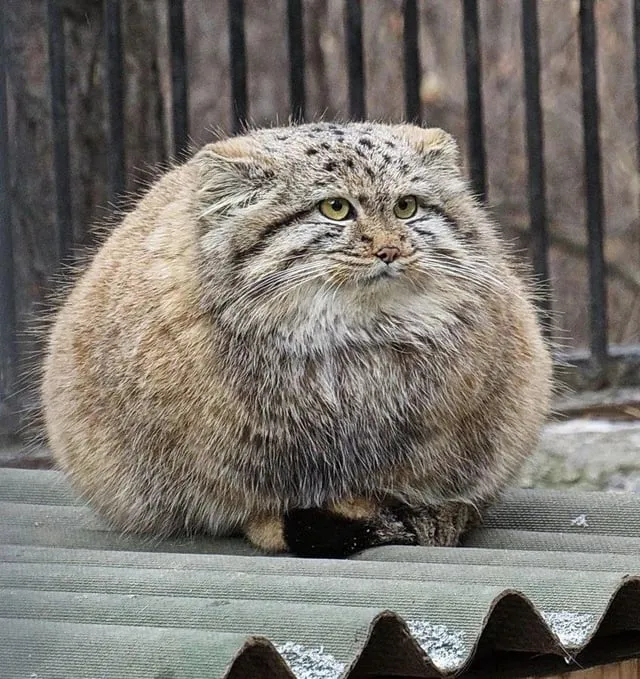
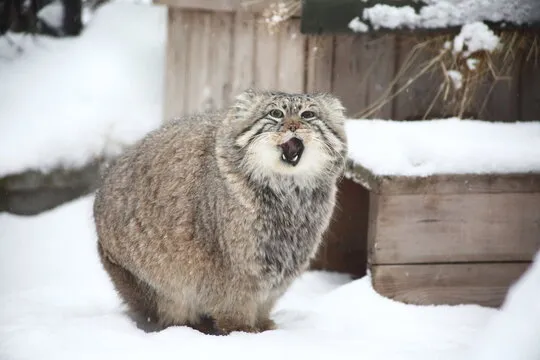

Manul
Manul, nazývaný též kočka stepní, je divoká kočka žijící v kamenitých stepích a horských oblastech střední Asie. Je to jediný zástupce rodu Otocolobus a vyznačuje se robustní postavou, krátkýma nohama a ušima a hustou srstí, která ho chrání před drsným podnebím. Na rozdíl od jiných koček má manul kulaté zornice a vydává zvuky spíše podobné psímu štěkotu než mňoukání. Manul je samotářská šelma, aktivní převážně v noci. Loví drobné hlodavce a ptáky, přičemž se spoléhá na svůj vynikající sluch a maskování. Je ohrožen ztrátou biotopu a lovem pro kožešinu, a proto je zařazen mezi zranitelné druhy.
Galerie
Fakta
Chlupatý rekordman
Na jeden centimetr čtvereční jeho srsti připadá až 9 000 chloupků
Mistr maskování
Jeho hustá srst a skvrnitá srst mu umožňují splynout s okolním prostředím.
Nešikovný lovec
Manulové mají jen 1 ze 3 lovů úspěšných.
Manul se vyskytuje v oblastech od Kazachstánu a Uzbekistánu přes Mongolsko a Čínu až do Tibetu a Íránu. Preferuje nadmořské výšky od 1 500 do 5 000 metrů nad mořem, kde obývá skalnaté stepi, horské louky a řídké lesy. Díky husté srsti a širokým tlapkám se mu daří i v drsných podmínkách s mrazivými zimami a sněhovou pokrývkou.
Je to obvykle aktivní v noci, kdy se vydává na lov. Své kořisti, jako jsou svišti, sysli, pískomilové a ptáci, se přibližuje nenápadně a s bleskovou rychlostí je chytá svými mohutnými tlapami. Je to vynikající lovec s výborným sluchem a zrakem, který mu umožňuje lovit i ve tmě.
Je to samotářské zvíře, které si svá teritoria značí močí a výměšky pachových žláz. Své teritorium aktivně brání před vetřelci, a to i za cenu boje. Jedinou výjimkou z jeho samotářského života je období říje, kdy se samci a samice sdružují k páření.